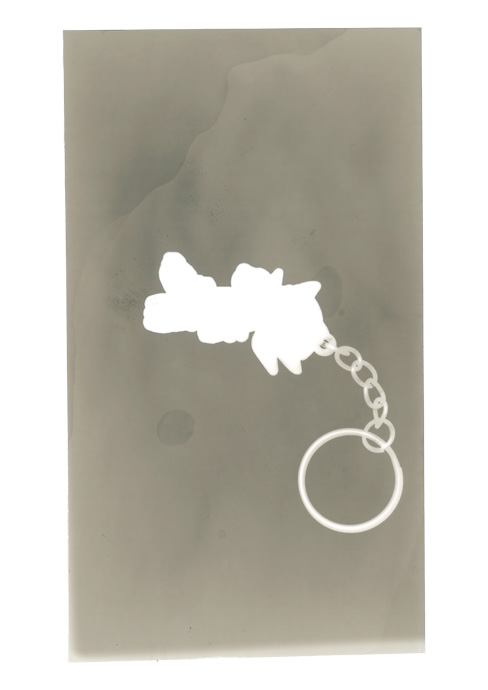
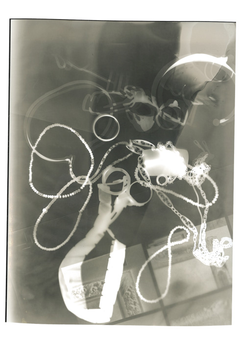
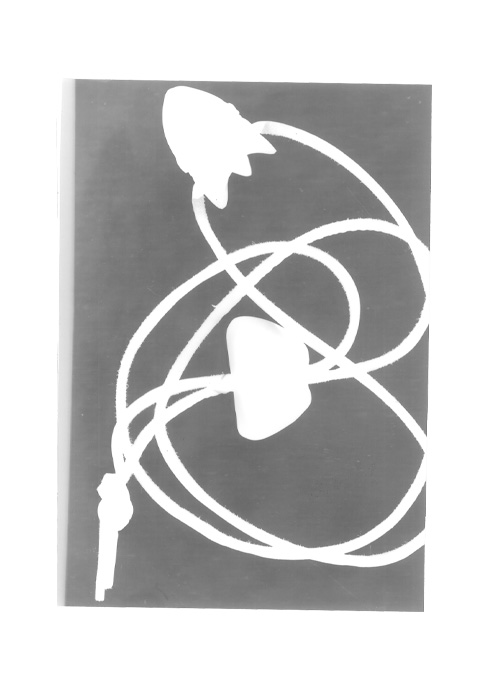
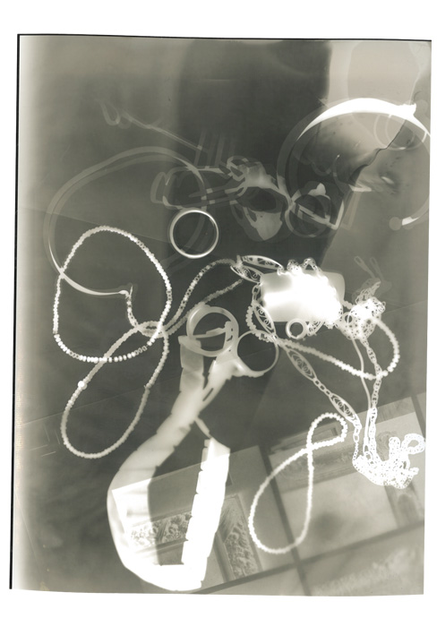
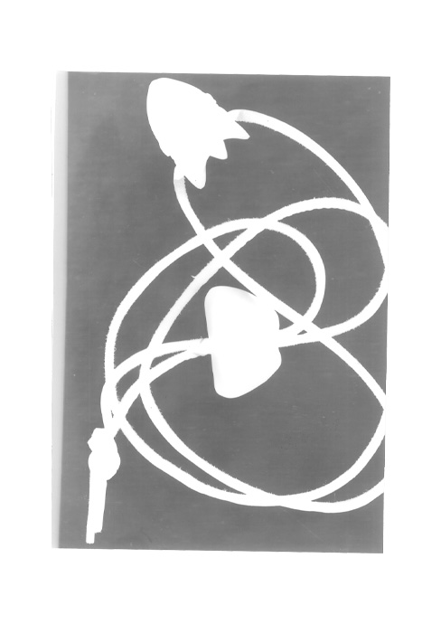
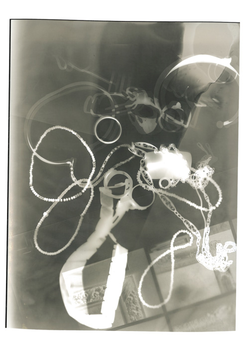
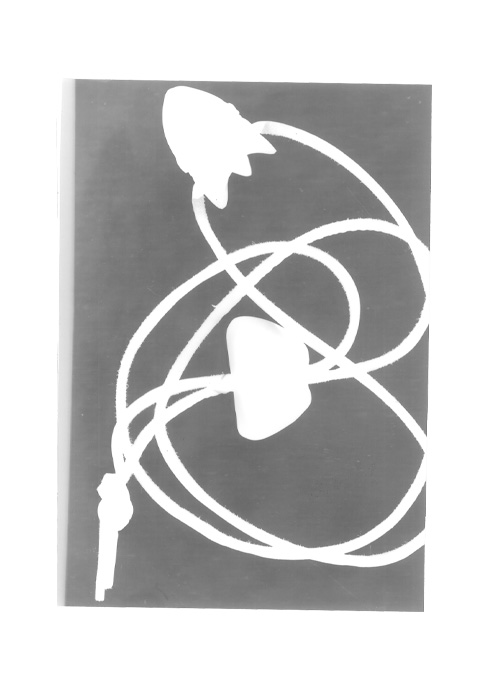

Workshop : Photogrammes
Un photogramme est une image photographique obtenue sans emploi d’objectif en plaçant un objet devant ou sur un papier photographique sensible et en éclairant l’ensemble d’une lumière orientée ou modulée. Pendant les Journées Portes Ouvertes 2025 de l'Esad d'Amiens j'ai proposé un workshop destiné aux visiteurs pour leur faire découvrir ce procédé photographique. Chaque visiteur choisissait un objet qu'il voulait rendre en image sur du papier photographique.



 




